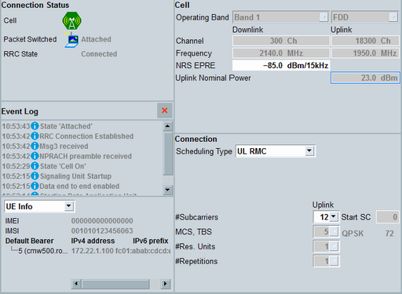

Main View
The main view of the signaling application shows status information and information derived from the uplink signal on the left and the most important settings on the right. All settings in this view can also be accessed via the configuration dialog.
For a description of available hotkeys, refer to "Signaling Control".

NB-IoT signaling main view
For descriptions of the individual areas of the view, refer to the subsections.